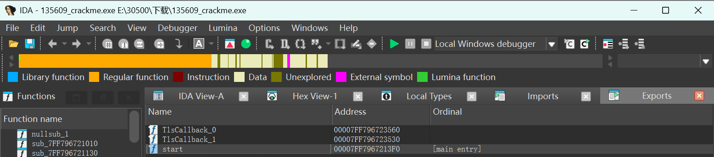
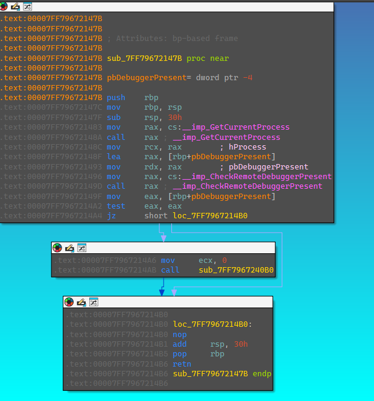
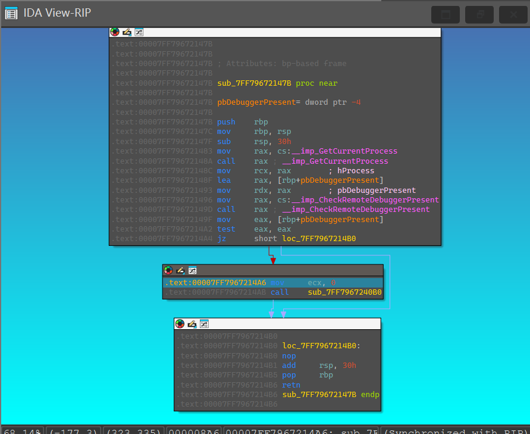
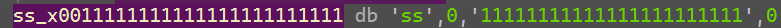
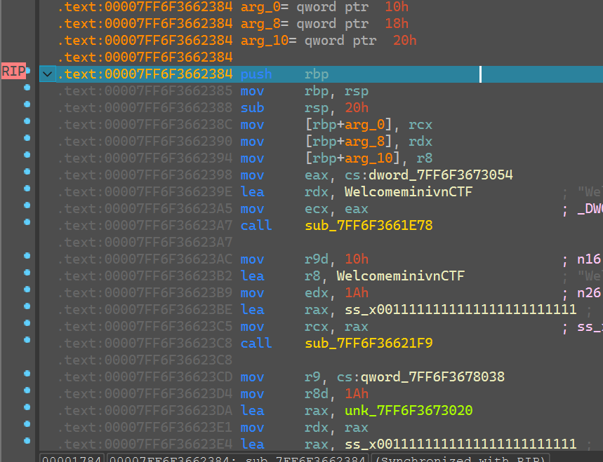
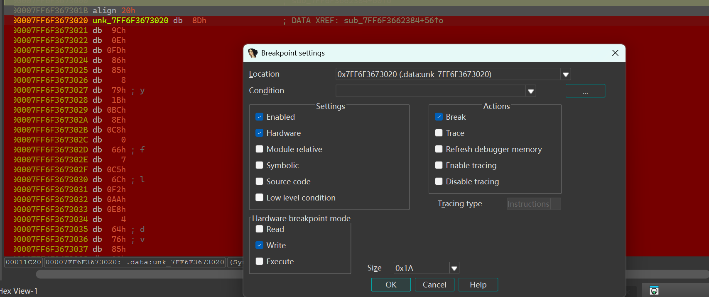
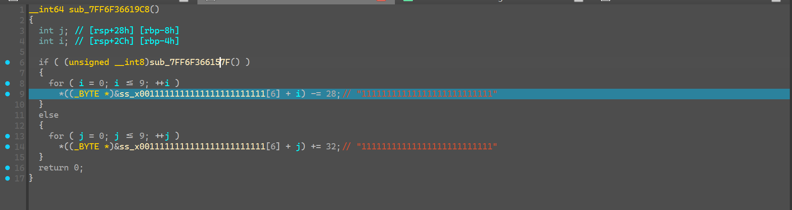

[miniVN] Crackme!
题目信息
题目名称: Crackme!
类型: Reverse Engineering
解题过程
IDA 打开，Shift + F12 定位主逻辑，动调发现有反调试。这里用的是类似“单步调试手动脱壳”的方式过反调试（F8 步过 call，如果程序结束就用 F7 步进）。这道题还有 TLS，但最开始发现不影响正常动调就没管。

一步一步调试最终找到反调试部分。

调试状态下旗帜位非零，所以只需要将 jz 改为 jmp 就能绕过这个反调试，之后就能顺利进入主逻辑了（但是不知道为什么在主函数内部下断点也会结束程序，只能下在 call 主函数那里，再 F7 步进）。

没有长度检验，随便输入看看加密后输入值有没有什么变化。可以看到输入值存放在：

在 memcmp 处下断点发现其实过程中输入值并没有发生改变，结合 hint：memcmp 函数被 hook 了，可知真正的加密逻辑在 memcmp 内部（其实看 string 加交叉引用也能找到）。步进进入真正的加密函数。

分析可以知道是一个简单的 RC4。我们可以直接把最后用来检验的密文 patch 进 ss_x0011111111111111111111111，发现最后解出来的 flag 后八个字符有错，并且继续步进直到输出 Wrong,Try again. 中途也没有发生改变，只能猜测是有另一个反调试函数对密文进行了修改。
在密文处下一个硬件写入断点，重新运行。

成功定位到，可以猜测检测到正在调试时，sub_7FF6F366157F() 返回值为非零值。

发现流程图跳转比较复杂，修改逻辑比较简单：直接照着 else 把 sub 改为 add，28 改为 32。
再次把密文过一遍 RC4，可以看到 flag 已经解出。
最终 flag：VNCTF{0h_y0u3_4r3_Be5t^_^}